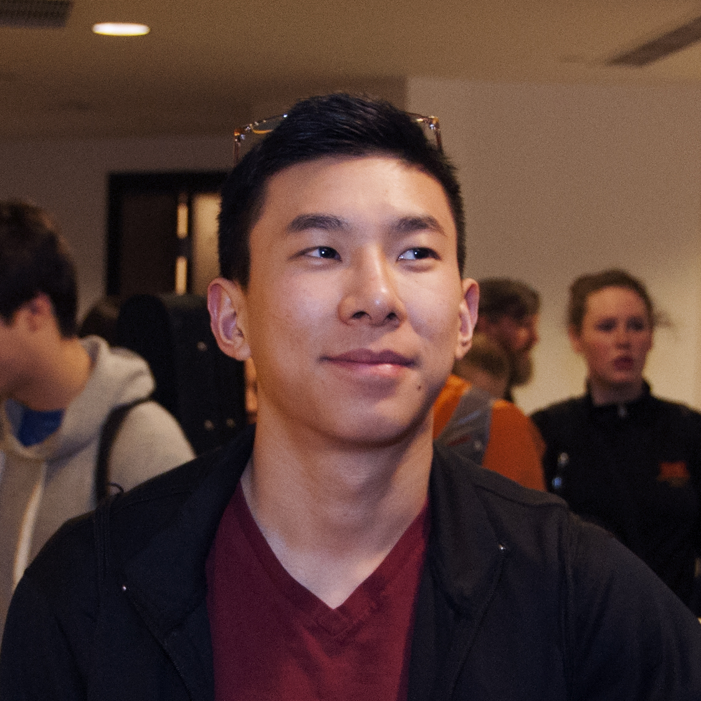

Hello!
I'm Nick.
I am 18 years old and am currently studying
Computer Science at the University of Waterloo.
I enjoy thinking about math and programming in my
spare time. I also occasionally actually create
an application or something from those musings.
Aside from tech, I enjoy competing in competitive
Cross Country and Track and Field with the
varsity team as well as on my own.
Additionally, I greatly enjoy making music with my
violin late at night. Feel free to check out my blog
to learn more about me!
Computer Science at the University of Waterloo.
I enjoy thinking about math and programming in my
spare time. I also occasionally actually create
an application or something from those musings.
Aside from tech, I enjoy competing in competitive
Cross Country and Track and Field with the
varsity team as well as on my own.
Additionally, I greatly enjoy making music with my
violin late at night. Feel free to check out my blog
to learn more about me!